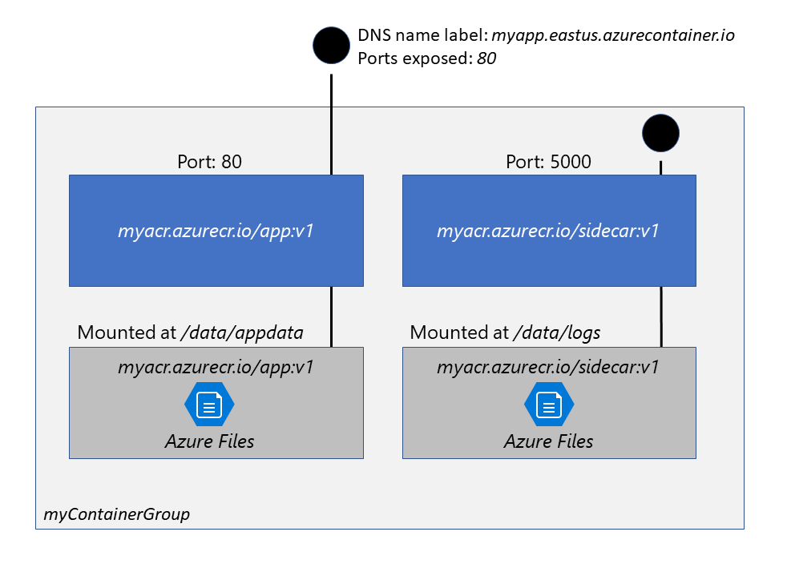
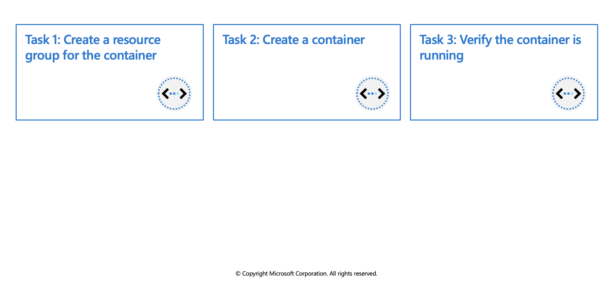

Azure Container Instances
Azure Container Instances (ACI) is a great solution for any scenario that can operate in isolated containers, including simple applications, task automation, and build jobs. Here are some of the benefits:
- Fast startup: ACI can start containers in Azure in seconds, without the need to provision and manage VMs
- Container access: ACI enables exposing your container groups directly to the internet with an IP address and a fully qualified domain name (FQDN)
- Hypervisor-level security: Isolate your application as completely as it would be in a VM
- Customer data: The ACI service stores the minimum customer data required to ensure your container groups are running as expected
- Custom sizes: ACI provides optimum utilization by allowing exact specifications of CPU cores and memory
- Persistent storage: Mount Azure Files shares directly to a container to retrieve and persist state
- Linux and Windows: Schedule both Windows and Linux containers using the same API.
For scenarios where you need full container orchestration, including service discovery across multiple containers, automatic scaling, and coordinated application upgrades, we recommend Azure Kubernetes Service (AKS).
Container groups
The top-level resource in Azure Container Instances is the container group. A container group is a collection of containers that get scheduled on the same host machine. The containers in a container group share a lifecycle, resources, local network, and storage volumes. It's similar in concept to a pod in Kubernetes.
The following diagram shows an example of a container group that includes multiple containers:

This example container group:
- Is scheduled on a single host machine.
- Is assigned a DNS name label.
- Exposes a single public IP address, with one exposed port.
- Consists of two containers. One container listens on port 80, while the other listens on port 5000.
- Includes two Azure file shares as volume mounts, and each container mounts one of the shares locally.
Note: Multi-container groups currently support only Linux containers. For Windows containers, Azure Container Instances only supports deployment of a single instance.
Deployment
There are two common ways to deploy a multi-container group: use a Resource Manager template or a YAML file. A Resource Manager template is recommended when you need to deploy additional Azure service resources (for example, an Azure Files share) when you deploy the container instances. Due to the YAML format's more concise nature, a YAML file is recommended when your deployment includes only container instances.
Resource allocation
Azure Container Instances allocates resources such as CPUs, memory, and optionally GPUs (preview) to a container group by adding the resource requests of the instances in the group. Taking CPU resources as an example, if you create a container group with two instances, each requesting 1 CPU, then the container group is allocated 2 CPUs.
Networking
Container groups share an IP address and a port namespace on that IP address. To enable external clients to reach a container within the group, you must expose the port on the IP address and from the container. Because containers within the group share a port namespace, port mapping isn't supported. Containers within a group can reach each other via localhost on the ports that they have exposed, even if those ports aren't exposed externally on the group's IP address.
Storage
You can specify external volumes to mount within a container group. You can map those volumes into specific paths within the individual containers in a group. Supported volumes include:
- Azure file share
- Secret
- Empty directory
- Cloned git repo
Common scenarios
Multi-container groups are useful in cases where you want to divide a single functional task into a small number of container images. These images can then be delivered by different teams and have separate resource requirements.
Example usage could include:
- A container serving a web application and a container pulling the latest content from source control.
- An application container and a logging container. The logging container collects the logs and metrics output by the main application and writes them to long-term storage.
- An application container and a monitoring container. The monitoring container periodically makes a request to the application to ensure that it's running and responding correctly, and raises an alert if it's not.
- A front-end container and a back-end container. The front end might serve a web application, with the back end running a service to retrieve data.
Exercise: Deploy a container instance by using the Azure CLI

In this exercise you'll learn how to perform the following actions:
- Create a resource group for the container
- Create a container
- Verify the container is running
Prerequisites
- An Azure account with an active subscription. If you don't already have one, follow this instructions.
Login to Azure and start the Cloud Shell
Login to the Azure Portal and open the Cloud Shell.

After the shell opens be sure to select the Bash environment.

Create a new resource group with the name az204-aci-rg so that it will be easier to clean up these resources when you are finished with the module.
az group create --name az204-aci-rg --location eastus
Create a container
You create a container by providing a name, a Docker image, and an Azure resource group to the az container create command. You will expose the container to the Internet by specifying a DNS name label.
Create a DNS name to expose your container to the Internet. Your DNS name must be unique, run this command from Cloud Shell to create a variable that holds a unique name.
DNS_NAME_LABEL=aci-example-$RANDOMRun the following
az container createcommand to start a container instance. It will take a few minutes for the operation to complete.az container create --resource-group az204-aci-rg \ --name mycontainer \ --image mcr.microsoft.com/azuredocs/aci-helloworld \ --ports 80 \ --dns-name-label $DNS_NAME_LABEL --location eastus \
In the commands above, $DNS_NAME_LABEL specifies your DNS name. The image name, mcr.microsoft.com/azuredocs/aci-helloworld, refers to a Docker image that runs a basic Node.js web application.
Verify the container is running
When the az container create command completes, run az container show to check its status.
az container show --resource-group az204-aci-rg \ --name mycontainer \ --query "{FQDN:ipAddress.fqdn,ProvisioningState:provisioningState}" \ --out table \You see your container's fully qualified domain name (FQDN) and its provisioning state. Here's an example.
FQDN ProvisioningState -------------------------------------- ------------------- aci-wt.eastus.azurecontainer.io SucceededNote: If your container is in the Creating state, wait a few moments and run the command again until you see the Succeeded state.
From a browser, navigate to your container's FQDN to see it running. You may get a warning that the site isn't safe.
Clean up resources
When no longer needed, you can use the az group delete command to remove the resource group, the container registry, and the container images stored there.
az group delete --name az204-aci-rg --no-wait
Note: This operation takes on average 5 - 10 minutes